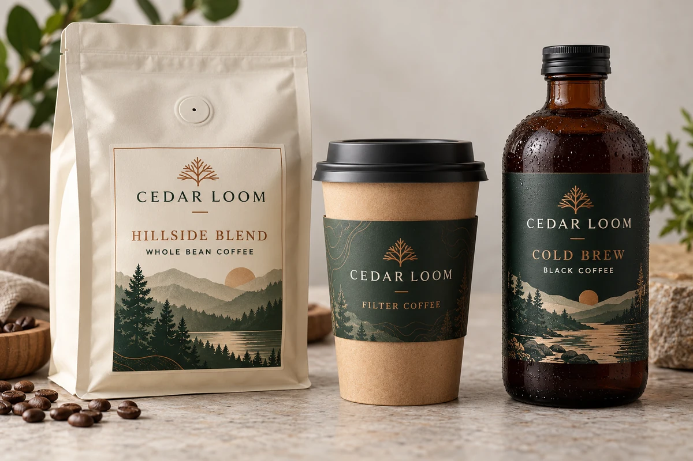

Build one coffee label family, with separate physical specifications
A shared brand system can make bags, cups and cold-brew bottles look related. It should not make their purchasing specifications identical. Start a family register with one row for each actual package and identify which design elements can be shared without concealing a different application job.
| Family member | Physical inputs to confirm | Artwork and release inputs |
|---|---|---|
| Bean or ground-coffee bag | Actual outside surface, filled panel, valve, folds and labeling method | Roast/variant identity, approved copy and later date area |
| Takeaway cup or sleeve | Exact component contacted, taper, sleeve position and intended handling | Drink/brand cue and any variable marking required by the cafe |
| Cold-brew bottle | Bottle material/tint, filled color, surface condition at labeling and refrigeration | Flavor distinction, white-ink areas and approved coding layout |
| Sample pack | Smallest actual usable panel and packing process | Legibility of the relevant approved text at final size |
Give each row a cut outline, construction proposal and quantity by artwork. Then mark what is common: perhaps the wordmark, type system and a small illustration family. A common color palette is a design choice; it is not evidence that one adhesive or print finish suits every surface.
Decide what can actually be standardized
For a hypothetical coffee roaster, one rectangular front design might work on two stock bag sizes after filled-panel checks. The cup sleeve and chilled bottle may still need different dimensions and constructions. That is a useful degree of standardization if it preserves readable information and a repeatable application process. Ordering the same oversized label for all four packages may save one setup while adding manual trimming, folds or rejected appearance.
Compare the complete proposed order rather than ask for the cheapest price per sticker. Separate quantities for each roast, grind, flavor and package size. Identify common artwork elements and version-specific copy. Ask which setup can be shared and which physical changes require their own production preparation. Do not assume a supplier's minimum, tooling or trial terms are the same for each construction.
If the bag carries a degassing valve, preserve its function and the pouch's normal folds. If the cup label goes on a sleeve, identify that sleeve as the contact surface rather than providing only a photo of the bare cup. If the bottle is labeled after chilling, disclose that route before choosing a material. Those three observations may lead to three justified specifications even when the brand artwork stays closely coordinated.
Release the family without losing the exceptions
Use one controlling register to identify the package reference, cut size, artwork revision, construction and application method for each row. Attach the agreed sample decision, and leave unsettled items visible. A revised seasonal roast name can affect one artwork without changing the cup label. A new bottle supplier can reopen physical qualification without changing the coffee name.
Ask the receiving packer or cafe operation to check how rolls or sheets are distinguished. Similar artwork increases the need for clear component identity; it does not justify mixing the bag and bottle stocks in one unidentified box. Retain the accepted printed reference and the corresponding specification rather than only a photograph of the brand family.
For the next step, use coffee-bag valve clearance, cup/sleeve placement and cold-brew route approval for the specific package. This article coordinates the purchasing family, while those guides settle the distinct application decisions. Send the package rows that remain undecided rather than ask the printer to infer three physical jobs from a single logo file.
Short answer
For coffee bags, paper or film labels can both work depending on the bag surface and brand style. For cold brew bottles, film labels are often safer because refrigeration and condensation are common. For cups and cafe packaging, confirm surface, application method and whether the label needs to handle moisture or heat.
Choose material by coffee package type
| Package | Common label choice | What to check |
|---|---|---|
| Coffee bags | Paper labels, textured paper or white film. | Bag surface, oil transfer, fold position and hand application. |
| Cold brew bottles | White BOPP, clear BOPP or PET film. | Condensation, bottle curve, barcode contrast and refrigeration. |
| Takeaway cups | Paper labels or cup transfer labels. | Cup surface, moisture, heat exposure and application speed. |
| Sample packs | Small roll labels or sheet labels. | Low quantity, multiple roast variants and readable flavor details. |
Layout details coffee buyers often forget
Coffee labels usually need more than a logo. Roast level, origin, flavor notes, grind type, weight, barcode, roast date, best-before area and batch code may all compete for space. If the package is small, plan the information hierarchy before choosing the label size.
Small batch and seasonal coffee labels
Coffee brands often need rotating roast names, seasonal designs and small test runs. Roll labels can support repeat application, while short runs can help test packaging before a larger order. Keep the core label size consistent when possible so each new roast does not require a new package layout.
What to send for a coffee label quote
Related guides
For cold bottle packaging, read waterproof beverage labels. For size planning, use the custom label size guide. If your design has many roast variants, review custom label MOQ before ordering.
FAQ
Can coffee bag labels use kraft paper style?
Yes. Many coffee bags use a natural paper look, but the adhesive should match the bag surface and handling condition.
Do cold brew labels need clear film?
Clear film is useful when the bottle or drink color should show through. White film is better when strong color, small text or barcode contrast matters more.
Can one coffee label design fit bags and bottles?
The brand style can match, but the label size, material and information layout should usually be adjusted for each package type.
Continue with Coffee Bag Label Placement Around a Degassing Valve for a focused purchase checklist.
Send the unresolved specification question
Include bag/cup/bottle references, dimensions and quantities per package/artwork, application conditions and the family-register rows still undecided.
Prepare a label specification inquiry. The contact form opens an email draft; review it and use the listed email or WhatsApp route for attachments. Available construction, sample scope, pricing and timing require confirmation for the actual job.